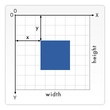
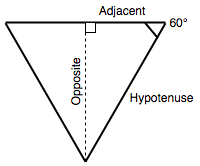
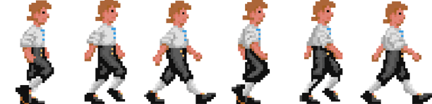

The browser contains some very powerful graphics programming tools, from the Scalable Vector Graphics (SVG) language, to APIs for drawing on HTML {{htmlelement("canvas")}} elements, (see The Canvas API and WebGL). This article provides an introduction to canvas, and further resources to allow you to learn more.
| Prerequisites: | JavaScript basics (see first steps, building blocks, JavaScript objects), the basics of Client-side APIs |
|---|---|
| Objective: | To learn the basics of drawing on <canvas> elements using JavaScript. |
As we talked about in our HTML Multimedia and embedding module, the Web was originally just text, which was very boring, so images were introduced — first via the {{htmlelement("img")}} element and later via CSS properties such as {{cssxref("background-image")}}, and SVG.
This however was still not enough. While you could use CSS and JavaScript to animate (and otherwise manipulate) SVG vector images — as they are represented by markup — there was still no way to do the same for bitmap images, and the tools available were rather limited. The Web still had no way to effectively create animations, games, 3D scenes, and other requirements commonly handled by lower level languages such as C++ or Java.
The situation started to improve when browsers began to support the {{htmlelement("canvas")}} element and associated Canvas API — Apple invented it in around 2004, and other browsers followed by implementing it in the years that followed. As you'll see below, canvas provides many useful tools for creating 2D animations, games, data visualizations, and other types of app, especially when combined with some of the other APIs the web platform provides.
The below example shows a simple 2D canvas-based bouncing balls animation that we originally met in our Introducing JavaScript objects module:
{{EmbedGHLiveSample("learning-area/javascript/oojs/bouncing-balls/index-finished.html", '100%', 500)}}
Around 2006–2007, Mozilla started work on an experimental 3D canvas implementation. This became WebGL, which gained traction among browser vendors, and was standardized around 2009–2010. WebGL allows you to create real 3D graphics inside your web browser; the below example shows a simple rotating WebGL cube:
{{EmbedGHLiveSample("learning-area/javascript/apis/drawing-graphics/threejs-cube/index.html", '100%', 500)}}
This article will focus mainly on 2D canvas, as raw WebGL code is very complex. We will however show how to use a WebGL library to create a 3D scene more easily, and you can find a tutorial covering raw WebGL elsewhere — see Getting started with WebGL.
Note: Basic canvas functionality is supported well across browsers, with the exception of IE 8 and below for 2D canvas, and IE 11 and below for WebGL.
If you want to create a 2D or 3D scene on a web page, you need to start with an HTML {{htmlelement("canvas")}} element. This element is used to define the area on the page into which the image will be drawn. This is as simple as including the element on the page:
<canvas width="320" height="240"></canvas>
This will create a canvas on the page with a size of 320 by 240 pixels.
Inside the canvas tags, you can put some fallback content, which is shown if the user's browser doesn't support canvas.
<canvas width="320" height="240"> <p>Your browser doesn't support canvas. Boo hoo!</p> </canvas>
Of course, the above message is really unhelpful! In a real example you'd want to relate the fallback content to the canvas content. For example, if you were rendering a constantly updating graph of stock prices, the fallback content could be a static image of the latest stock graph, with alt text saying what the prices are in text.
Let's start by creating our own canvas that we draw future experiments on to.
First make a local copy of our 0_canvas_start.html file, and open it in your text editor.
Add the following code into it, just below the opening {{htmlelement("body")}} tag:
<canvas class="myCanvas"> <p>Add suitable fallback here.</p> </canvas>
We have added a class to the <canvas> element so it will be easier to select if we have multiple canvases on the page, but we have removed the width and height attributes for now (you could add them back in if you wanted, but we will set them using JavaScript in a below section). Canvases with no explicit width and height default to 300 pixels wide by 150 pixels high.
Now add the following lines of JavaScript inside the {{htmlelement("script")}} element:
const canvas = document.querySelector('.myCanvas');
const width = canvas.width = window.innerWidth;
const height = canvas.height = window.innerHeight;
Here we have stored a reference to the canvas in the canvas constant. In the second line we set both a new constant width and the canvas' width property equal to {{domxref("Window.innerWidth")}} (which gives us the viewport width). In the third line we set both a new constant height and the canvas' height property equal to {{domxref("Window.innerHeight")}} (which gives us the viewport height). So now we have a canvas that fills the entire width and height of the browser window!
You'll also see that we are chaining assignments together with multiple equals signs — this is allowed in JavaScript, and it is a good technique if you want to make multiple variables all equal to the same value. We wanted to make the canvas width and height easily accessible in the width/height variables, as they are useful values to have available for later (for example, if you want to draw something exactly halfway across the width of the canvas).
If you save and load your example in a browser now, you'll see nothing, which is fine, but you'll also see scrollbars — this is a problem for us, which happens because the {{htmlelement("body")}} element has a {{cssxref("margin")}} that, added to our full-window-size canvas, results in a document that's wider than the window. To get rid of the scrollbars, we need to remove the {{cssxref("margin")}} and also set {{cssxref("overflow")}} to hidden. Add the following into the {{htmlelement("head")}} of your document:
<style>
body {
margin: 0;
overflow: hidden;
}
</style>
The scrollbars should now be gone.
Note: You should generally set the size of the image using HTML attributes or DOM properties, as explained above. You could use CSS, but the trouble then is that the sizing is done after the canvas has rendered, and just like any other image (the rendered canvas is just an image), the image could become pixelated/distorted.
We need to do one final thing before we can consider our canvas template finished. To draw onto the canvas we need to get a special reference to the drawing area called a context. This is done using the {{domxref("HTMLCanvasElement.getContext()")}} method, which for basic usage takes a single string as a parameter representing the type of context you want to retrieve.
In this case we want a 2d canvas, so add the following JavaScript line below the others inside the <script> element:
const ctx = canvas.getContext('2d');
Note: other context values you could choose include webgl for WebGL, webgl2 for WebGL 2, etc., but we won't need those in this article.
So that's it — our canvas is now primed and ready for drawing on! The ctx variable now contains a {{domxref("CanvasRenderingContext2D")}} object, and all drawing operations on the canvas will involve manipulating this object.
Let's do one last thing before we move on. We'll color the canvas background black to give you a first taste of the canvas API. Add the following lines at the bottom of your JavaScript:
ctx.fillStyle = 'rgb(0, 0, 0)'; ctx.fillRect(0, 0, width, height);
Here we are setting a fill color using the canvas' {{domxref("CanvasRenderingContext2D.fillStyle", "fillStyle")}} property (this takes color values just like CSS properties do), then drawing a rectangle that covers the entire area of the canvas with the{{domxref("CanvasRenderingContext2D.fillRect", "fillRect")}} method (the first two parameters are the coordinates of the rectangle's top left hand corner; the last two are the width and height you want the rectangle drawn at — we told you those width and height variables would be useful)!
OK, our template is done and it's time to move on.
As we said above, all drawing operations are done by manipulating a {{domxref("CanvasRenderingContext2D")}} object (in our case, ctx). Many operations need to be given coordinates to pinpoint exactly where to draw something — the top left of the canvas is point (0, 0), the horizontal (x) axis runs from left to right, and the vertical (y) axis runs from top to bottom.

Drawing shapes tends to be done using the rectangle shape primitive, or by tracing a line along a certain path and then filling in the shape. Below we'll show how to do both.
Let's start with some simple rectangles.
First of all, take a copy of your newly coded canvas template (or make a local copy of 1_canvas_template.html if you didn't follow the above steps).
Next, add the following lines to the bottom of your JavaScript:
ctx.fillStyle = 'rgb(255, 0, 0)'; ctx.fillRect(50, 50, 100, 150);
If you save and refresh, you should see a red rectangle has appeared on your canvas. Its top left corner is 50 pixels away from the top and left of the canvas edge (as defined by the first two parameters), and it is 100 pixels wide and 150 pixels tall (as defined by the third and fourth parameters).
Let's add another rectangle into the mix — a green one this time. Add the following at the bottom of your JavaScript:
ctx.fillStyle = 'rgb(0, 255, 0)'; ctx.fillRect(75, 75, 100, 100);
Save and refresh, and you'll see your new rectangle. This raises an important point: graphics operations like drawing rectangles, lines, and so forth are performed in the order in which they occur. Think of it like painting a wall, where each coat of paint overlaps and may even hide what's underneath. You can't do anything to change this, so you have to think carefully about the order in which you draw the graphics.
Note that you can draw semi-transparent graphics by specifying a semi-transparent color, for example by using rgba(). The a value defines what's called the "alpha channel, " or the amount of transparency the color has. The higher its value, the more it will obscure whatever's behind it. Add the following to your code:
ctx.fillStyle = 'rgba(255, 0, 255, 0.75)'; ctx.fillRect(25, 100, 175, 50);
Now try drawing some more rectangles of your own; have fun!
So far we've looked at drawing filled rectangles, but you can also draw rectangles that are just outlines (called strokes in graphic design). To set the color you want for your stroke, you use the {{domxref("CanvasRenderingContext2D.strokeStyle", "strokeStyle")}} property; drawing a stroke rectangle is done using {{domxref("CanvasRenderingContext2D.strokeRect", "strokeRect")}}.
Add the following to the previous example, again below the previous JavaScript lines:
ctx.strokeStyle = 'rgb(255, 255, 255)'; ctx.strokeRect(25, 25, 175, 200);
The default width of strokes is 1 pixel; you can adjust the {{domxref("CanvasRenderingContext2D.lineWidth", "lineWidth")}} property value to change this (it takes a number representing the number of pixels wide the stroke is). Add the following line in between the previous two lines:
ctx.lineWidth = 5;
Now you should see that your white outline has become much thicker! That's it for now. At this point your example should look like this:
{{EmbedGHLiveSample("learning-area/javascript/apis/drawing-graphics/getting-started/2_canvas_rectangles.html", '100%', 250)}}
Note: The finished code is available on GitHub as 2_canvas_rectangles.html.
If you want to draw anything more complex than a rectangle, you need to draw a path. Basically, this involves writing code to specify exactly what path the pen should move along on your canvas to trace the shape you want to draw. Canvas includes functions for drawing straight lines, circles, Bézier curves, and more.
Let's start the section off by making a fresh copy of our canvas template (1_canvas_template.html), in which to draw the new example.
We'll be using some common methods and properties across all of the below sections:
lineWidth and fillStyle/strokeStyle with paths as well as rectangles.A typical, simple path-drawing operation would look something like so:
ctx.fillStyle = 'rgb(255, 0, 0)'; ctx.beginPath(); ctx.moveTo(50, 50); // draw your path ctx.fill();
Let's draw an equilateral triangle on the canvas.
First of all, add the following helper function to the bottom of your code. This converts degree values to radians, which is useful because whenever you need to provide an angle value in JavaScript, it will nearly always be in radians, but humans usually think in degrees.
function degToRad(degrees) {
return degrees * Math.PI / 180;
};
Next, start off your path by adding the following below your previous addition; here we set a color for our triangle, start drawing a path, and then move the pen to (50, 50) without drawing anything. That's where we'll start drawing our triangle.
ctx.fillStyle = 'rgb(255, 0, 0)'; ctx.beginPath(); ctx.moveTo(50, 50);
Now add the following lines at the bottom of your script:
ctx.lineTo(150, 50); let triHeight = 50 * Math.tan(degToRad(60)); ctx.lineTo(100, 50+triHeight); ctx.lineTo(50, 50); ctx.fill();
Let's run through this in order:
First we draw a line across to (150, 50) — our path now goes 100 pixels to the right along the x axis.
Second, we work out the height of our equilateral triangle, using a bit of simple trigonometry. Basically, we are drawing the triangle pointing downwards. The angles in an equilateral triangle are always 60 degrees; to work out the height we can split it down the middle into two right-angled triangles, which will each have angles of 90 degrees, 60 degrees, and 30 degrees. In terms of the sides:

One of the basic trigonometric formulae states that the length of the adjacent multiplied by the tangent of the angle is equal to the opposite, hence we come up with 50 * Math.tan(degToRad(60)). We use our degToRad() function to convert 60 degrees to radians, as {{jsxref("Math.tan()")}} expects an input value in radians.
With the height calculated, we draw another line to (100, 50 + triHeight). The X coordinate is simple; it must be halfway between the previous two X values we set. The Y value on the other hand must be 50 plus the triangle height, as we know the top of the triangle is 50 pixels from the top of the canvas.
The next line draws a line back to the starting point of the triangle.
Last of all, we run ctx.fill() to end the path and fill in the shape.
Now let's look at how to draw a circle in canvas. This is accomplished using the {{domxref("CanvasRenderingContext2D.arc", "arc()")}} method, which draws all or part of a circle at a specified point.
Let's add an arc to our canvas — add the following to the bottom of your code:
ctx.fillStyle = 'rgb(0, 0, 255)'; ctx.beginPath(); ctx.arc(150, 106, 50, degToRad(0), degToRad(360), false); ctx.fill();
arc() takes six parameters. The first two specify the position of the arc's center (X and Y, respectively). The third is the circle's radius, the fourth and fifth are the start and end angles at which to draw the circle (so specifying 0 and 360 degrees gives us a full circle), and the sixth parameter defines whether the circle should be drawn counterclockwise (anticlockwise) or clockwise (false is clockwise).
Note: 0 degrees is horizontally to the right.
Let's try adding another arc:
ctx.fillStyle = 'yellow'; ctx.beginPath(); ctx.arc(200, 106, 50, degToRad(-45), degToRad(45), true); ctx.lineTo(200, 106); ctx.fill();
The pattern here is very similar, but with two differences:
arc() to true, meaning that the arc is drawn counterclockwise, which means that even though the arc is specified as starting at -45 degrees and ending at 45 degrees, we draw the arc around the 270 degrees not inside this portion. If you were to change true to false and then re-run the code, only the 90 degree slice of the circle would be drawn.fill(), we draw a line to the center of the circle. This means that we get the rather nice Pac-Man-style cutout rendered. If you removed this line (try it!) then re-ran the code, you'd get just an edge of the circle chopped off between the start and end point of the arc. This illustrates another important point of the canvas — if you try to fill an incomplete path (i.e. one that is not closed), the browser fills in a straight line between the start and end point and then fills it in.That's it for now; your final example should look like this:
{{EmbedGHLiveSample("learning-area/javascript/apis/drawing-graphics/getting-started/3_canvas_paths.html", '100%', 200)}}
Note: The finished code is available on GitHub as 3_canvas_paths.html.
Note: To find out more about advanced path drawing features such as Bézier curves, check out our Drawing shapes with canvas tutorial.
Canvas also has features for drawing text. Let's explore these briefly. Start by making another fresh copy of our canvas template (1_canvas_template.html) in which to draw the new example.
Text is drawn using two methods:
Both of these take three properties in their basic usage: the text string to draw and the X and Y coordinates of the point to start drawing the text at. This works out as the bottom left corner of the text box (literally, the box surrounding the text you draw), which might confuse you as other drawing operations tend to start from the top left corner — bear this in mind.
There are also a number of properties to help control text rendering such as {{domxref("CanvasRenderingContext2D.font", "font")}}, which lets you specify font family, size, etc. It takes as its value the same syntax as the CSS {{cssxref("font")}} property.
Try adding the following block to the bottom of your JavaScript:
ctx.strokeStyle = 'white';
ctx.lineWidth = 1;
ctx.font = '36px arial';
ctx.strokeText('Canvas text', 50, 50);
ctx.fillStyle = 'red';
ctx.font = '48px georgia';
ctx.fillText('Canvas text', 50, 150);
Here we draw two lines of text, one outline and the other stroke. The final example should look like so:
{{EmbedGHLiveSample("learning-area/javascript/apis/drawing-graphics/getting-started/4_canvas_text.html", '100%', 180)}}
Note: The finished code is available on GitHub as 4_canvas_text.html.
Have a play and see what you can come up with! You can find more information on the options available for canvas text at Drawing text.
It is possible to render external images onto your canvas. These can be simple images, frames from videos, or the content of other canvases. For the moment we'll just look at the case of using some simple images on our canvas.
As before, make another fresh copy of our canvas template (1_canvas_template.html) in which to draw the new example. In this case you'll also need to save a copy of our sample image — firefox.png — in the same directory.
Images are drawn onto canvas using the {{domxref("CanvasRenderingContext2D.drawImage", "drawImage()")}} method. The simplest version takes three parameters — a reference to the image you want to render, and the X and Y coordinates of the image's top left corner.
Let's start by getting an image source to embed in our canvas. Add the following lines to the bottom of your JavaScript:
let image = new Image(); image.src = 'firefox.png';
Here we create a new {{domxref("HTMLImageElement")}} object using the {{domxref("HTMLImageElement.Image()", "Image()")}} constructor. The returned object is the same type as that which is returned when you grab a reference to an existing {{htmlelement("img")}} element). We then set its {{htmlattrxref("src", "img")}} attribute to equal our Firefox logo image. At this point, the browser starts loading the image.
We could now try to embed the image using drawImage(), but we need to make sure the image file has been loaded first, otherwise the code will fail. We can achieve this using the onload event handler, which will only be invoked when the image has finished loading. Add the following block below the previous one:
image.onload = function() {
ctx.drawImage(image, 50, 50);
}
If you load your example in the browser now, you should see the image embedded in the canvas.
But there's more! What if we want to display only a part of the image, or to resize it? We can do both with the more complex version of drawImage(). Update your ctx.drawImage() line like so:
ctx.drawImage(image, 20, 20, 185, 175, 50, 50, 185, 175);
The final example should look like so:
{{EmbedGHLiveSample("learning-area/javascript/apis/drawing-graphics/getting-started/5_canvas_images.html", '100%', 260)}}
Note: The finished code is available on GitHub as 5_canvas_images.html.
We have so far covered some very basic uses of 2D canvas, but really you won't experience the full power of canvas unless you update or animate it in some way. After all, canvas does provide scriptable images! If you aren't going to change anything, then you might as well just use static images and save yourself all the work.
Playing with loops in canvas is rather fun — you can run canvas commands inside a for (or other type of) loop just like any other JavaScript code.
Let's build a simple example.
Make another fresh copy of our canvas template (1_canvas_template.html) and open it in your code editor.
Add the following line to the bottom of your JavaScript. This contains a new method, {{domxref("CanvasRenderingContext2D.translate", "translate()")}}, which moves the origin point of the canvas:
ctx.translate(width/2, height/2);
This causes the coordinate origin (0, 0) to be moved to the center of the canvas, rather than being at the top left corner. This is very useful in many situations, like this one, where we want our design to be drawn relative to the center of the canvas.
Now add the following code to the bottom of the JavaScript:
function degToRad(degrees) {
return degrees * Math.PI / 180;
};
function rand(min, max) {
return Math.floor(Math.random() * (max-min+1)) + (min);
}
let length = 250;
let moveOffset = 20;
for(var i = 0; i < length; i++) {
}
Here we are implementing the same degToRad() function we saw in the triangle example above, a rand() function that returns a random number between given lower and upper bounds, length and moveOffset variables (which we'll find out more about later), and an empty for loop.
The idea here is that we'll draw something on the canvas inside the for loop, and iterate on it each time so we can create something interesting. Add the following code inside your for loop:
ctx.fillStyle = 'rgba(' + (255-length) + ', 0, ' + (255-length) + ', 0.9)';
ctx.beginPath();
ctx.moveTo(moveOffset, moveOffset);
ctx.lineTo(moveOffset+length, moveOffset);
let triHeight = length/2 * Math.tan(degToRad(60));
ctx.lineTo(moveOffset+(length/2), moveOffset+triHeight);
ctx.lineTo(moveOffset, moveOffset);
ctx.fill();
length--;
moveOffset += 0.7;
ctx.rotate(degToRad(5));
So on each iteration, we:
fillStyle to be a shade of slightly transparent purple, which changes each time based on the value of length. As you'll see later the length gets smaller each time the loop runs, so the effect here is that the color gets brighter with each successive triangle drawn.(moveOffset, moveOffset); This variable defines how far we want to move each time we draw a new triangle.(moveOffset+length, moveOffset). This draws a line of length length parallel to the X axis.fill() to fill in the triangle.length value by 1, so the triangles get smaller each time; increase moveOffset by a small amount so each successive triangle is slightly further away, and use another new function, {{domxref("CanvasRenderingContext2D.rotate", "rotate()")}}, which allows us to rotate the entire canvas! We rotate it by 5 degrees before drawing the next triangle.That's it! The final example should look like so:
{{EmbedGHLiveSample("learning-area/javascript/apis/drawing-graphics/loops_animation/6_canvas_for_loop.html", '100%', 550)}}
At this point, we'd like to encourage you to play with the example and make it your own! For example:
length and moveOffset values.rand() function we included above but didn't use.Note: The finished code is available on GitHub as 6_canvas_for_loop.html.
The loop example we built above was fun, but really you need a constant loop that keeps going and going for any serious canvas applications (such as games and real time visualizations). If you think of your canvas as being like a movie, you really want the display to update on each frame to show the updated view, with an ideal refresh rate of 60 frames per second so that movement appears nice and smooth to the human eye.
There are a few JavaScript functions that will allow you to run functions repeatedly, several times a second, the best one for our purposes here being {{domxref("window.requestAnimationFrame()")}}. It takes one parameter — the name of the function you want to run for each frame. The next time the browser is ready to update the screen, your function will get called. If that function draws the new update to your animation, then calls requestAnimationFrame() again just before the end of the function, the animation loop will continue to run. The loop ends when you stop calling requestAnimationFrame() or if you call {{domxref("window.cancelAnimationFrame()")}} after calling requestAnimationFrame() but before the frame is called.
Note: It's good practice to call cancelAnimationFrame() from your main code when you're done using the animation, to ensure that no updates are still waiting to be run.
The browser works out complex details such as making the animation run at a consistent speed, and not wasting resources animating things that can't be seen.
To see how it works, let's quickly look again at our Bouncing Balls example (see it live, and also see the source code). The code for the loop that keeps everything moving looks like this:
function loop() {
ctx.fillStyle = 'rgba(0, 0, 0, 0.25)';
ctx.fillRect(0, 0, width, height);
for(let i = 0; i < balls.length; i++) {
balls[i].draw();
balls[i].update();
balls[i].collisionDetect();
}
requestAnimationFrame(loop);
}
loop();
We run the loop() function once at the bottom of the code to start the cycle, drawing the first animation frame; the loop() function then takes charge of calling requestAnimationFrame(loop) to run the next frame of the animation, again and again.
Note that on each frame we are completely clearing the canvas and redrawing everything. For every ball present we draw it, update its position, and check to see if it is colliding with any other balls. Once you've drawn a graphic to a canvas, there's no way to manipulate that graphic individually like you can with DOM elements. You can't move each ball around on the canvas, because once it's drawn, it's part of the canvas, and is not an individual accessible element or object. Instead, you have to erase and redraw, either by erasing the entire frame and redrawing everything, or by having code that knows exactly what parts need to be erased and only erases and redraws the minimum area of the canvas necessary.
Optimizing animation of graphics is an entire specialty of programming, with lots of clever techniques available. Those are beyond what we need for our example, though!
In general, the process of doing a canvas animation involves the following steps:
requestAnimationFrame() to schedule drawing of the next frame of the animation.Note: We won't cover save() and restore() here, but they are explained nicely in our Transformations tutorial (and the ones that follow it).
Now let's create our own simple animation — we'll get a character from a certain rather awesome retro computer game to walk across the screen.
Make another fresh copy of our canvas template (1_canvas_template.html) and open it in your code editor. Make a copy of walk-right.png in the same directory.
At the bottom of the JavaScript, add the following line to once again make the coordinate origin sit in the middle of the canvas:
ctx.translate(width/2, height/2);
Now let's create a new {{domxref("HTMLImageElement")}} object, set its {{htmlattrxref("src", "img")}} to the image we want to load, and add an onload event handler that will cause the draw() function to fire when the image is loaded:
let image = new Image(); image.src = 'walk-right.png'; image.onload = draw;
Now we'll add some variables to keep track of the position the sprite is to be drawn on the screen, and the sprite number we want to display.
let sprite = 0; let posX = 0;
Let's explain the spritesheet image (which we have respectfully borrowed from Mike Thomas' Create a sprite sheet walk cycle using CSS animation). The image looks like this:

It contains six sprites that make up the whole walking sequence — each one is 102 pixels wide and 148 pixels high. To display each sprite cleanly we will have to use drawImage() to chop out a single sprite image from the spritesheet and display only that part, like we did above with the Firefox logo. The X coordinate of the slice will have to be a multiple of 102, and the Y coordinate will always be 0. The slice size will always be 102 by 148 pixels.
Now let's insert an empty draw() function at the bottom of the code, ready for filling up with some code:
function draw() {
};
the rest of the code in this section goes inside draw(). First, add the following line, which clears the canvas to prepare for drawing each frame. Notice that we have to specify the top-left corner of the rectangle as -(width/2), -(height/2) because we specified the origin position as width/2, height/2 earlier on.
ctx.fillRect(-(width/2), -(height/2), width, height);
Next, we'll draw our image using drawImage — the 9-parameter version. Add the following:
ctx.drawImage(image, (sprite*102), 0, 102, 148, 0+posX, -74, 102, 148);
As you can see:
image as the image to embed.sprite multiplied by 102 (where sprite is the sprite number between 0 and 5) and the Y value always 0.posX, meaning that we can alter the drawing position by altering the posX value.Now we'll alter the sprite value after each draw — well, after some of them anyway. Add the following block to the bottom of the draw() function:
if (posX % 13 === 0) {
if (sprite === 5) {
sprite = 0;
} else {
sprite++;
}
}
We are wrapping the whole block in if (posX % 13 === 0) { ... }. We use the modulo (%) operator (also known as the remainder operator) to check whether the posX value can be exactly divided by 13 with no remainder. If so, we move on to the next sprite by incrementing sprite (wrapping to 0 after we're done with sprite #5). This effectively means that we are only updating the sprite on every 13th frame, or roughly about 5 frames a second (requestAnimationFrame() calls us at up to 60 frames per second if possible). We are deliberately slowing down the frame rate because we only have six sprites to work with, and if we display one every 60th of a second, our character will move way too fast!
Inside the outer block we use an if ... else statement to check whether the sprite value is at 5 (the last sprite, given that the sprite numbers run from 0 to 5). If we are showing the last sprite already, we reset sprite back to 0; if not we just increment it by 1.
Next we need to work out how to change the posX value on each frame — add the following code block just below your last one.
if(posX > width/2) {
newStartPos = -((width/2) + 102);
posX = Math.ceil(newStartPos);
console.log(posX);
} else {
posX += 2;
}
We are using another if ... else statement to see if the value of posX has become greater than width/2, which means our character has walked off the right edge of the screen. If so, we calculate a position that would put the character just to the left of the left side of the screen.
If our character hasn't yet walked off the edge of the screen, we increment posX by 2. This will make him move a little bit to the right the next time we draw him.
Finally, we need to make the animation loop by calling {{domxref("window.requestAnimationFrame", "requestAnimationFrame()")}} at the bottom of the draw() function:
window.requestAnimationFrame(draw);
That's it! The final example should look like so:
{{EmbedGHLiveSample("learning-area/javascript/apis/drawing-graphics/loops_animation/7_canvas_walking_animation.html", '100%', 260)}}
Note: The finished code is available on GitHub as 7_canvas_walking_animation.html.
As a final animation example, we'd like to show you a very simple drawing application, to illustrate how the animation loop can be combined with user input (like mouse movement, in this case). We won't get you to walk through and build this one; we'll just explore the most interesting parts of the code.
The example can be found on GitHub as 8_canvas_drawing_app.html, and you can play with it live below:
{{EmbedGHLiveSample("learning-area/javascript/apis/drawing-graphics/loops_animation/8_canvas_drawing_app.html", '100%', 600)}}
Let's look at the most interesting parts. First of all, we keep track of the mouse's X and Y coordinates and whether it is being clicked or not with three variables: curX, curY, and pressed. When the mouse moves, we fire a function set as the onmousemove event handler, which captures the current X and Y values. We also use onmousedown and onmouseup event handlers to change the value of pressed to true when the mouse button is pressed, and back to false again when it is released.
let curX;
let curY;
let pressed = false;
document.onmousemove = function(e) {
curX = (window.Event) ? e.pageX : e.clientX + (document.documentElement.scrollLeft ? document.documentElement.scrollLeft : document.body.scrollLeft);
curY = (window.Event) ? e.pageY : e.clientY + (document.documentElement.scrollTop ? document.documentElement.scrollTop : document.body.scrollTop);
}
canvas.onmousedown = function() {
pressed = true;
};
canvas.onmouseup = function() {
pressed = false;
}
When the "Clear canvas" button is pressed, we run a simple function that clears the whole canvas back to black, the same way we've seen before:
clearBtn.onclick = function() {
ctx.fillStyle = 'rgb(0, 0, 0)';
ctx.fillRect(0, 0, width, height);
}
The drawing loop is pretty simple this time around — if pressed is true, we draw a circle with a fill style equal to the value in the color picker, and a radius equal to the value set in the range input. We have to draw the circle 85 pixels above where we measured it from, because the vertical measurement is taken from the top of the viewport, but we are drawing the circle relative to the top of the canvas, which starts below the 85 pixel-high toolbar. If we drew it with just curY as the y coordinate, it would appear 85 pixels lower than the mouse position.
function draw() {
if(pressed) {
ctx.fillStyle = colorPicker.value;
ctx.beginPath();
ctx.arc(curX, curY-85, sizePicker.value, degToRad(0), degToRad(360), false);
ctx.fill();
}
requestAnimationFrame(draw);
}
draw();
Note: The {{htmlelement("input")}} range and color types are supported fairly well across browsers, with the exception of Internet Explorer versions less than 10; also Safari doesn't yet support color. If your browser doesn't support these inputs, they will fall back to simple text fields and you'll just have to enter valid color/number values yourself.
It's now time to leave 2D behind, and take a quick look at 3D canvas. 3D canvas content is specified using the WebGL API, which is a completely separate API from the 2D canvas API, even though they both render onto {{htmlelement("canvas")}} elements.
WebGL is based on OpenGL (Open Graphics Library), and allows you to communicate directly with the computer's GPU. As such, writing raw WebGL is closer to low level languages such as C++ than regular JavaScript; it is quite complex but incredibly powerful.
Because of its complexity, most people write 3D graphics code using a third party JavaScript library such as Three.js, PlayCanvas, or Babylon.js. Most of these work in a similar way, providing functionality to create primitive and custom shapes, position viewing cameras and lighting, covering surfaces with textures, and more. They handle the WebGL for you, letting you work on a higher level.
Yes, using one of these means learning another new API (a third party one, in this case), but they are a lot simpler than coding raw WebGL.
Let's look at a simple example of how to create something with a WebGL library. We'll choose Three.js, as it is one of the most popular ones. In this tutorial we'll create the 3D spinning cube we saw earlier.
To start with, make a local copy of index.html in a new folder, then save a copy of metal003.png in the same folder. This is the image we'll use as a surface texture for the cube later on.
Next, create a new file called main.js, again in the same folder as before.
If you open index.html in your code editor, you'll see that it has two {{htmlelement("script")}} elements — the first one attaching three.min.js to the page, and the second one attaching our main.js file to the page. You need to download the three.min.js library and save it in the same directory as before.
Now we've got three.js attached to our page, we can start to write JavaScript that makes use of it into main.js. Let's start by creating a new scene — add the following into your main.js file:
const scene = new THREE.Scene();
The Scene() constructor creates a new scene, which represents the whole 3D world we are trying to display.
Next, we need a camera so we can see the scene. In 3D imagery terms, the camera represents a viewer's position in the world. To create a camera, add the following lines next:
const camera = new THREE.PerspectiveCamera(75, window.innerWidth / window.innerHeight, 0.1, 1000); camera.position.z = 5;
The PerspectiveCamera() constructor takes four arguments:
We also set the camera's position to be 5 distance units out of the Z axis, which, like in CSS, is out of the screen towards you, the viewer.
The third vital ingredient is a renderer. This is an object that renders a given scene, as viewed through a given camera. We'll create one for now using the WebGLRenderer() constructor, but we'll not use it till later. Add the following lines next:
const renderer = new THREE.WebGLRenderer(); renderer.setSize(window.innerWidth, window.innerHeight); document.body.appendChild(renderer.domElement);
The first line creates a new renderer, the second line sets the size at which the renderer will draw the camera's view, and the third line appends the {{htmlelement("canvas")}} element created by the renderer to the document's {{htmlelement("body")}}. Now anything the renderer draws will be displayed in our window.
Next, we want to create the cube we'll display on the canvas. Add the following chunk of code at the bottom of your JavaScript:
let cube;
let loader = new THREE.TextureLoader();
loader.load( 'metal003.png', function (texture) {
texture.wrapS = THREE.RepeatWrapping;
texture.wrapT = THREE.RepeatWrapping;
texture.repeat.set(2, 2);
let geometry = new THREE.BoxGeometry(2.4, 2.4, 2.4);
let material = new THREE.MeshLambertMaterial( { map: texture, shading: THREE.FlatShading } );
cube = new THREE.Mesh(geometry, material);
scene.add(cube);
draw();
});
There's a bit more to take in here, so let's go through it in stages:
cube global variable so we can access our cube from anywhere in the code.TextureLoader object, then call load() on it. load() takes two parameters in this case (although it can take more): the texture we want to load (our PNG), and a function that will run when the texture has loaded.texture object to specify that we want a 2 x 2 repeat of the image wrapped around all sides of the cube. Next, we create a new BoxGeometry object and a new MeshLambertMaterial object, and bring them together in a Mesh to create our cube. An object typically requires a geometry (what shape it is) and a material (what its surface looks like).draw() function to start off the animation.Before we get to defining draw(), we'll add a couple of lights to the scene, to liven things up a bit; add the following blocks next:
let light = new THREE.AmbientLight('rgb(255, 255, 255)'); // soft white light
scene.add(light);
let spotLight = new THREE.SpotLight('rgb(255, 255, 255)');
spotLight.position.set( 100, 1000, 1000 );
spotLight.castShadow = true;
scene.add(spotLight);
An AmbientLight object is a kind of soft light that lightens the whole scene a bit, like the sun when you are outside. The SpotLight object, on the other hand, is a directional beam of light, more like a flashlight/torch (or a spotlight, in fact).
Last of all, let's add our draw() function to the bottom of the code:
function draw() {
cube.rotation.x += 0.01;
cube.rotation.y += 0.01;
renderer.render(scene, camera);
requestAnimationFrame(draw);
}
This is fairly intuitive; on each frame, we rotate our cube slightly on its X and Y axes, then render the scene as viewed by our camera, then finally call requestAnimationFrame() to schedule drawing our next frame.
Let's have another quick look at what the finished product should look like:
{{EmbedGHLiveSample("learning-area/javascript/apis/drawing-graphics/threejs-cube/index.html", '100%', 500)}}
You can find the finished code on GitHub.
Note: In our GitHub repo you can also find another interesting 3D cube example — Three.js Video Cube (see it live also). This uses {{domxref("MediaDevices.getUserMedia", "getUserMedia()")}} to take a video stream from a computer web cam and project it onto the side of the cube as a texture!
At this point, you should have a useful idea of the basics of graphics programming using Canvas and WebGL and what you can do with these APIs, as well as a good idea of where to go for further information. Have fun!
Here we have covered only the real basics of canvas — there is so much more to learn! The below articles will take you further.
{{PreviousMenuNext("Learn/JavaScript/Client-side_web_APIs/Third_party_APIs", "Learn/JavaScript/Client-side_web_APIs/Video_and_audio_APIs", "Learn/JavaScript/Client-side_web_APIs")}}
{kind=link}
{kind=link}
{kind=link}